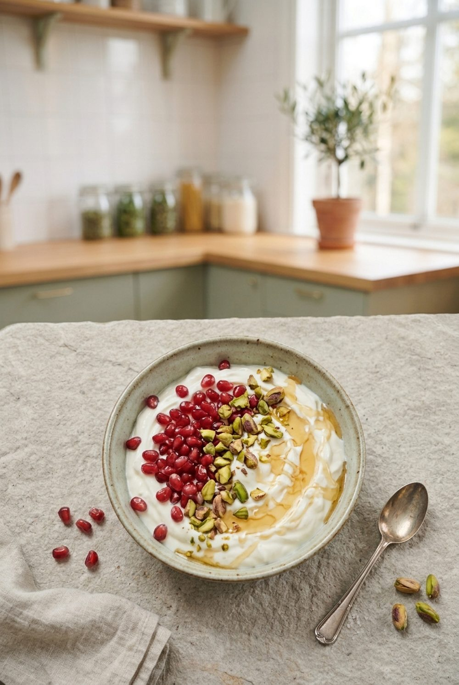

Frühstück · vegetarisch
Griechischer Joghurt mit Granatapfel und Pistazien
Sieht aus wie im Café, dauert fünf Minuten: cremiger Joghurt, rubinrote Kerne, grüne Pistazien.

Nährwerte pro Portion
Eiweiß10 g
Ballaststoffe3 g
Zutaten für 1 Portion
- 150 g griechischer Joghurt (10 % Fett)
- 60 g Granatapfelkerne
- 15 g Pistazien, grob gehackt
- 1 TL Honig
Enthält: Milch, Schalenfrüchte. Nährwerte berechnet mit dem Bundeslebensmittelschlüssel (BLS 4.0), 355 kcal · 24 g Kohlenhydrate · 23 g Fett pro Portion.
Zubereitung
- Joghurt in eine Schale füllen und mit dem Löffel eine Mulde formen.
- Granatapfelkerne und Pistazien darüber verteilen.
- Mit einem Hauch Honig beträufeln.
Mehr aus der App
Dieses Rezept stammt aus der WellANNI-App (Foto KI-generiert). Dort findest du über 200 geprüfte Rezepte, planst deine Woche für den ganzen Haushalt samt Einkaufsliste und siehst, was dein Teller schon geliefert hat.
WellANNI App holenPassende Kollektion: Morgenroutine & Haut